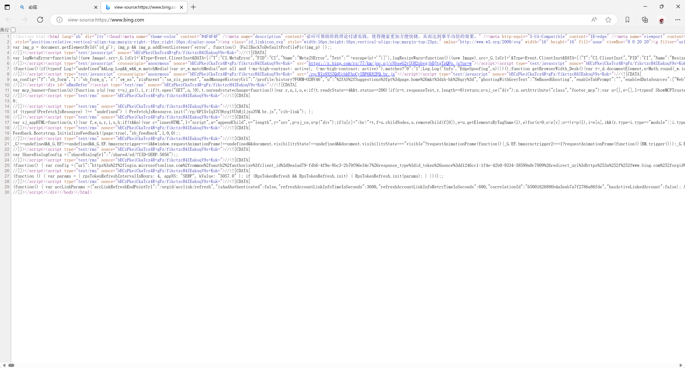
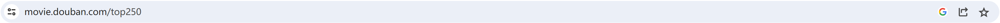

graph LR id1(网页源代码) --> id2(CSS: 网页的样式) id1 --> id3(HTML: 网页的结构和信息) id1 --> id4(JavaScript: 用户和网页的交互逻辑)
16 HTML 文档与 Requests 库
HTML 文档
一、HTML 的概念
一个网页通常由以下三大技术要素组成：
CSS：定义网页的样式HTML：定义网页的结构和信息JavaScript：定义用户和网页的交互逻辑
由于我们在爬取数据时，主要关心的是网页上面的信息，我们主要学习 HTML。
HTML(HyperText Markup Language)即超文本标记语言，是一种用于创建和组织网页内容的标记语言。它被广泛应用于 Web 开发中，是互联网上最基本的构建块之一，用于描述网页上的文本、图像、链接、表格、多媒体和其他元素的结构和外观。HTML使用标记（标签）来定义文档的结构和内容，这些标记可以通过Web浏览器解释和渲染，以便用户查看和与之交互。
在学习 HTML 文档时，我们首先要记住的概念就是，HTML 是一种标记语言，它使用一系列的标签(由尖括号 <> 括起来)来标记文档的各个部分，如标题、段落、图像等。
随机打开一个网页，在页面上单击右键，选择查看网页源代码，你就可以看到一个网页的源码是如撰写的。比如，我们打开必应 (bing.com)，在打开其网页源代码，就可以看到如下所示的界面：

仔细观察这个页面，你会发现其中有许许多多的标签，这些标签共同构成了这个页面，其中，网页的 HTML 通常位于 <html> 标签之间，包含网页的整体结构，主要有 <head> 和 <body> 部分；CSS 通常位于 <style> 标签内，或者作为外部样式表文件链接到 HTML 页面中；JavaScript 通常位于 <script> 标签内，也可以作为外部 JavaScript 文件链接到 HTML 页面之中。
Note
文本与超文本
- 文本（Text）
- 文本是一种线性的、有序的信息传递方式。它通常指代书写、打印或输入的字母、数字和符号组成的字符串。
- 文本只包含基本字符，没有多样的格式或媒体元素。
- 在计算机领域，文本通常指代不包含多媒体内容、链接或其他互动元素的字符数据。
- 超文本（Hypertext）
- 超文本是一种非线性的、互动的信息传递方式。它不仅包含文本内容，还包括可以链接到其他文档、网页、图像、视频等媒体的超链接。
- 超文本具有更丰富的表现形式，可以通过链接实现跳转、导航和互动。
- 在计算机领域，超文本通常指代包含超链接的内容，这些超链接可以将用户引导到相关的信息或资源。
总的来说，文本强调线性、顺序式的信息传递，而超文本强调非线性、互动式的信息传递，通过链接实现了内容的关联性和丰富性。Web 中的超文本是基于 HTML 构建的，通过超链接和其他元素，使用户能够在不同的网页和资源之间进行自由导航和交互。
让我们一起来看看一个简单的 HTML 示例：
<!DOCTYPE html>
<html>
<head>
<meta charset="utf-8">
<title>简单的网页示例</title>
</head>
<body>
<h1>欢迎来到我的网页</h1>
<p>这是一个简单的HTML示例，用于展示基本的网页结构和元素。</p>
<p>你可以点击下面的链接跳转到其他网页：</p>
<ul>
<li><a href="https://python.pypandas.com/">示例链接1</a></li>
<li><a href="https://movie.douban.com/top250">示例链接2</a></li>
</ul>
</body>
</html>上面的示例中，用 <> 括起来的内容，就是 HTML 的标签。尝试将上面的示例代码输入到记事本中保存，并将文件后缀修改为 .html，这样我们就得到了一个带有相应内容的网页，将其在浏览器中打开，观察其中的元素与代码之间的联系。你还可以尝试修改一下代码的内容，自定义你的第一个网页。
浏览器渲染网页时，会把 HTML 源码解析成一个标签树，每个标签都是树的一个节点(node)。这种节点就称为网页元素(element)。所以，“标签”和“元素”基本上是同义词，只是使用的场合不一样：标签是从源码角度来看，元素是从编程角度来看，比如 <p> 标签对应网页的 p 元素。
这个示例具有一个网页的基本结构，让我们一起来观察一下这个简单的示例代码，看看 HTML 文档的基本组成部分。
<!DOCTYPE>声明<!DOCTYPE>声明通常是网页的第一个标签，定义文档的类型和版本，告诉浏览器如何解析网页。默认情况下，只需要简单声明doctype为html即可，浏览器会按照 HTML 5 的规则解析网页。
<html><html>是文档的根元素，网页的顶层容器，一个网页只能有一个<html>标签，该标签包含了整个HTML文档，其他元素都是它的子元素。
<head><head>标签包含文档的元信息，如标题、字符编码和链接到外部资源的信息，该标签的内容不会出现在网页上。<head>标签是<html>标签下的第一个子元素，如果网页不包含<head>，浏览器将会自动创建一个。
<meta>- 用于设置或说明网页的元数据，必须放置在
<head>标签里。一个<meta>标签就是一项元数据，一个网页可以有多个<meta>标签。一般来说，<meta>标签放置在<head>的最前面。
- 用于设置或说明网页的元数据，必须放置在
<title><title>标签定义文档的标题，显示在浏览器的标题栏或标签页上，该标签内部不能再放置其他标签，只能放置无格式的纯文本。
<body><body>标签是一个容器标签，用于放置网页的主体内容。浏览器显示的页面内容，如文本、图像、链接等，都放置在它的内部。它是<html>的第二个子元素，紧跟在<head>后面。
<!DOCTYPE html>
<html>
<head>
<title>My HTML Page</title>
</head>
<body>
<h1>This is a Heading</h1>
<p>This is a paragraph.</p>
<a href="https://example.com">Visit Example</a>
</body>
</html>
标签通常成对出现，包括起始标签和闭合标签。例如，<p> 是表示段落的起始标签，</p> 是表示段落的闭合标签。
Note
在 <body> 标签内部，我们可以使用各种各样的标签来定义页面中的不同元素，下面是一些常见元素的表示方法：
- 标题： 使用
<h1>、<h2>、<h3>等标题标签定义页面的标题，标题按重要性逐级递减。 - 段落： 使用
<p>标签定义段落，用于包含文本段落。 - 链接： 使用
<a>标签定义链接，可以链接到其他页面、文件、位置等，我们日常使用的超链接，就是通过<a>标签定义的。 - 图像： 使用
<img>标签插入图像，需要指定图像的来源（URL）等信息。 - 列表： 使用
<ul>（无序列表）和<ol>（有序列表）定义列表，使用<li>定义列表项。 - 表格： 使用
<table>定义表格，使用<tr>定义表格行，使用<td>定义单元格。 - 表单： 使用
<form>定义表单，用于用户输入和提交数据。包含输入字段、按钮等。
另外，在 HTML 文档中，注释的写法与 Python 并不一样，HTML 代码的注释以 <!-- 开头，以 --> 结尾，可以换行。
<!-- 这是一个注释 -->
<!--
<p>hello world</p>
-->如果你使用的是 Google Chrome 浏览器，也可以打开一个新标签页，根据我们前面所学的知识观察新标签页的源代码，并且尝试拆分他们。
<!doctype html>
<html dir="ltr" lang="zh">
<head>
<meta charset="utf-8">
<title>新标签页</title>
<style>
body {
background: #3C3C3C;
margin: 0;
}
#backgroundImage {
border: none;
height: 100%;
pointer-events: none;
position: fixed;
top: 0;
visibility: hidden;
width: 100%;
}
[show-background-image] #backgroundImage {
visibility: visible;
}
</style>
</head>
<body>
<iframe id="backgroundImage" src=""></iframe>
<ntp-app></ntp-app>
<script type="module" src="new_tab_page.js"></script>
<link rel="stylesheet" href="chrome://resources/css/text_defaults_md.css">
<link rel="stylesheet" href="chrome://theme/colors.css?sets=ui,chrome">
<link rel="stylesheet" href="shared_vars.css">
</body>
</html>最后我们需要注意的是各个标签之间的层级关系。
在上面的 HTML 示例中，仔细观察标签 <body> 中的内容，这些就是它的子元素。在 HTML 和 CSS 中，元素之间存在多种关系，其中两个重要的关系就是“父子元素”和“兄弟元素”。
- 父子元素关系： 父子元素关系指的是一个元素包含在另一个元素的内部，形成了层级关系。在 HTML 中，这通常表示一个元素是另一个元素的子元素。例如：
<div> <!-- 这是父元素 -->
<p>这是子元素</p> <!-- 这是子元素 -->
</div>在这个例子中，<div> 元素是 <p> 元素的父元素，而 <p> 元素是 <div> 元素的子元素。子元素通常位于父元素的内部，并且可以通过嵌套来创建更复杂的结构。
- 兄弟元素关系： 兄弟元素关系指的是位于同一父元素内的元素之间的关系，它们具有相同的父元素。例如：
<ul> <!-- 父元素 -->
<li>Item 1</li> <!-- 这是兄弟元素 -->
<li>Item 2</li> <!-- 这是兄弟元素 -->
<li>Item 3</li> <!-- 这是兄弟元素 -->
</ul>在这个例子中，<li> 元素之间就是兄弟元素，它们都是 <ul> 元素的子元素，并且具有相同的父元素。兄弟元素通常位于同一层次结构中，它们可以通过 CSS 选择器和 JavaScript 来选择和操作。
graph LR
id1(HTMl) --> id2("父元素1\n(兄弟元素1)")
id2 --> id3(兄弟元素2)
id2 --> id4(兄弟元素2)
id1 --> id5("父元素2\n(兄弟元素1)")
二、使用 XPath 选取 HTML 元素
要编写爬虫程序，抓取网页中特定的信息，就是要从 HTML 中选取出我们所需要的元素。通过上面的学习，我们掌握了 HTML 文档的构成，接下来，我们一起来看看如何从一个 HTML 网页中选取到我们想要的元素。
我们已经知道了，HTML 由许许多多的标签组成。因此，我们要抓取特定的内容，也就要从标签下手。要在 HTMl 文档中定位和提取数据，我们可以使用 XPath 表达式或 CSS 表达式。
我们首先来看看 XPath 表达式。
1. XPath 的概念
XPath 是一种用于在XML文档中定位和提取数据的查询语言。它广泛用于解析和操作XML文档，同时也适用于HTML文档，特别是在Web爬虫和数据抓取中。要使用 XPath，我们可以使用 lxml 库，它是一个用于处理XML和HTML文档的强大库，支持XPath查询。使用下面的代码安装它：
!pip install lxml在本次学习中，我们以下面的 HTML 文档为示例，复制下面的代码，将其保存为一个 .html 文件。
<!DOCTYPE html>
<html>
<head>
<title>一个HTML文档</title>
</head>
<body>
<header>
<h1>网页抓取示例</h1>
<nav>
<ul>
<li><a href="https://jupyter.pydatacamp.com/hub/login">开始练习吧！</a></li>
<li><a href="https://pydatacamp.com/">记得认真阅读文档！！</a></li>
<li><a href="https://docs.qq.com/doc/DS1dFSVBCcndjbXNa">记录你的问题~</a></li>
</ul>
</nav>
</header>
<section id="content">
<article>
<h2>文章1</h2>
<p>这是第一篇文章。📃📃📃📃📃好多字呀！🔤🔣🔤🔣🔤</p>
</article>
<article>
<h2>文章2</h2>
<p>这是第二篇文章。😆🎮➡️🦹👉📄✏️➡️🥹➡️😭➡️📝➡️🗒️🗒️🗒️🗒️🗒️➡️😫😫➡️😭😭➡️🥱🦥➡️🫣🙈🫣➡️😆🎮</p>
</article>
</section>
<aside>
<h3>相关链接</h3>
<ul>
<li><a href="https://zty.pe/">要不要学习打字？</a></li>
<li><a href="https://weread.qq.com/">多多读书准没错！</a></li>
<li><a href="https://www.4399.com/">或许是时候休息一会儿了😎☕</a></li>
<li><a href="https://movie.douban.com/top250">也许看看电影是个好选择🎞️</a></li>
</ul>
</aside>
<footer>
<p>© 2023 网页抓取示例</p>
</footer>
</body>
</html>2. XPath 节点
在 XPath 中，节点是 HTML 文档的基本构建块，用于表示文档的不同部分。你可以将节点理解为 HTML 文档中的标签。XPath 通过选择不同类型的节点来定位和访问文档中的数据。XPath 共有七种类型的节点：元素节点、属性节点、文本节点、命名空间节点、处理指令节点、注释节点以及文档(根)节点。在本次学习中，我们主要关注以下三种：
元素节点
元素节点用以表示文档中的标签，如：
<div>、<p>、<a>等。元素节点可以包含其他元素节点、文本节点和属性节点。属性节点
属性节点用以表示元素的属性，如：
<a href="https://example.com">中的href属性。属性节点可以提供关于元素的额外信息。文本节点
文本节点用以表示元素中的文本内容，如：
<p>这是文本节点</p>中的“这是文本节点”就是一个文本节点。
XPath 节点之间的关系也很重要，在 HTML 部分，我们了解了各个标签之间存在父子元素关系、兄弟元素关系，这些关系也可以用于 XPath 节点。另外，如果我们将父子元素关系推而广之，就拥有了先辈-后代元素关系。
先辈节点：某节点的父节点、父节点的父节点等，都是该节点的先辈节点。
后代节点：某节点的子节点、子节点的子节点等，都是该节点的后代节点。
graph LR
id1(HTMl) --> id2("先辈元素1\n----------\n父元素1\n----------\n兄弟元素1")
id2 --> id3("先辈元素2\n----------\n父元素2\n----------\n兄弟元素2\n----------\n子元素1\n----------\n后代元素1")
id2 --> id4(兄弟元素2)
id3 --> id6("子元素2\n----------\n后代元素2")
id1 --> id5(兄弟元素1)
3. XPath 语法
了解了 XPath 节点的前置知识，我们就可以开始尝试在 JupyterLab 中开始练习了。
首先，我们需要 lxml 库为我们提供对 HTML 文档的解析支持。
from lxml import html随后，设置 HTML 文档字符串：
# 设置 HTML 文档字符串
html_string = """
<!DOCTYPE html>
<html>
<head>
<title>一个HTML文档</title>
</head>
<body>
<header>
<h1>网页抓取示例</h1>
<nav>
<ul>
<li><a href="https://jupyter.pydatacamp.com/hub/login">开始练习吧！</a></li>
<li><a href="https://pydatacamp.com/">记得认真阅读文档！！</a></li>
<li><a href="https://docs.qq.com/doc/DS1dFSVBCcndjbXNa">记录你的问题~</a></li>
</ul>
</nav>
</header>
<section id="content">
<article>
<h2>文章1</h2>
<p>这是第一篇文章。📃📃📃📃📃好多字呀！🔤🔣🔤🔣🔤</p>
</article>
<article>
<h2>文章2</h2>
<p>这是第二篇文章。😆🎮➡️🦹👉📄✏️➡️🥹➡️😭➡️📝➡️🗒️🗒️🗒️🗒️🗒️➡️😫😫➡️😭😭➡️🥱🦥➡️🫣🙈🫣➡️😆🎮</p>
</article>
</section>
<aside>
<h3>相关链接</h3>
<ul>
<li><a href="https://zty.pe/">要不要学习打字？</a></li>
<li><a href="https://weread.qq.com/">多多读书准没错！</a></li>
<li><a href="https://www.4399.com/">或许是时候休息一会儿了😎☕</a></li>
<li><a href="https://movie.douban.com/top250">也许看看电影是个好选择🎞️</a></li>
</ul>
</aside>
<footer>
<p>© 2023 网页抓取示例</p>
</footer>
</body>
</html>
"""
# 使用lxml的html模块解析HTML
parsed_html = html.fromstring(html_string)将 HTML 字符串准备好以后，就使用 html.fromstring() 方法来解析它。
如果在前面你已经将这个示例文档保存为了 .html 文件，可以像下面这样，使用 html.parse() 方法来解析它：
# 指定HTML文件的路径
html_file_path = r'文档路径'
parser = html.HTMLParser(encoding='utf-8')
# 使用lxml的html模块解析HTML文件
parsed_html = html.parse(html_file_path, parser=parser)html.fromstring() 和 html.parse() 是 lxml 库提供的两种主要的 HTML 文档解析方法。
html.fromstring() 既简单又直观，它通常适用于处理内存中的单个 HTML 片段或字符串。一般情况下，从文件中加载的较大的 HTML 文档不使用该方法进行处理。
html.parse() 多用于解析从本地文件或 URL 加载的 HTML 文档，这个方法适用于处理完整的 HTML 文档。
现在我们一起来看看 XPath 是如何选取元素的。
(1) 节点选取
一个 HTML 文档中，通常会有许多相同的标签，我们通过这些标签来定位节点。但是仔细观察 HTML 文档就会发现，同一标签可能会在不同地方出现许多次，在不同的地方实现不同的功能。因此，我们就需要找到一种方法来定位我们需要的标签——利用元素关系，即根据不同先辈-后代元素之间的关系来定位元素。比如，要找到上面的 HTML 文档中 <header> 标签下的 <h1> 标签，就可以从 <h1> 标签出发，一个个查询其先辈元素：
/html/body/header/h1graph TD id(html) --> id1(body) --> id2(header) --> id3(h1) id3 -- 上溯 --> id2 id2 -- 上溯 --> id1 id1 -- 上溯 --> id
了解了这个原则，我们就可以按照下面的规则来定位文档中的任意元素了。
| 表达式 | 描述 | 示例 | 说明 | 使用示例 |
|---|---|---|---|---|
nodename |
选取此节点的所有子节点 | /html |
选取根节点的所有子节点 | result1 = parsed_html.xpath('/html') |
// |
从根节点取子节点 | //h1 |
从根节点开始选取所有 <h1> 元素 |
result2 = parsed_html.xpath('//h1') |
/ |
选取某个指定节点的子节点 | /html/body/header |
选取 <header> 元素的子节点 |
result3 = parsed_html.xpath('/html/body/header') |
@ |
选取带有指定属性的节点 | //@id |
选取所有带有 id 属性的节点 |
result6 = parsed_html.xpath('//@id') |
. |
选取当前节点 | ./header |
选取当前节点的 <header> 元素 |
header_element = body_element.xpath('./header')[0] |
现在，让我们一起看看这些表达式的实现效果如何。
Note
需要注意的是，XPath 查询返回的结果不是节点的内容，而是代表选定节点的元素对象。因此如果直接输出查询到的内容，会将这些元素对象的地址等信息输出出来，而不会直接包含节点的文本信息。
如果想要获取节点的文本内容，就需要进一步处理元素对象，例如使用 .text 属性或 .text_content 方法来提取文本内容。
使用
.text属性：大多数 XML/HTML 解析库（包括 lxml）的元素对象都具有一个.text属性，它可以用来获取元素的文本内容。# 使用 .text 属性获取文本内容 element = parsed_html.xpath('//h1')[0] text_content = element.text print(text_content)使用
.text_content()方法：lxml 库的元素对象还提供了一个.text_content()方法，它返回元素及其子元素的文本内容。# 使用 .text_content() 方法获取文本内容 element = parsed_html.xpath('//h1')[0] text_content = element.text_content() print(text_content)
1. 选取根节点的所有子节点
result1 = parsed_html.xpath('/html')
print("示例1:", result1)示例1: [<Element html at 0x26a08172210>]2. 从根节点开始选取所有 <h1> 元素
result2 = parsed_html.xpath('//h1')
print("示例2:", result2)示例2: [<Element h1 at 0x26a081671b0>]3. 选取 <html> 下 <body> 标签中的 <header> 元素
result3 = parsed_html.xpath('/html/body/header')
print("示例3:", result3)示例3: [<Element header at 0x26a08185d60>]4. 选取所有带有 id 属性的节点
result6 = parsed_html.xpath('//@id')
print("示例6:", result6)5. 将当前节点移动到 <body> 元素下，然后选取当前节点中的 <header> 元素
可能你已经注意到，最后一个表达式的使用示例与其他表达式不太一致。这是由于这个方法是用在当前节点下的，这意味着我们不能够像使用其他表达式那样，在任意位置使用这个方法。按表格中的例子来看，完整的方法应该是这样的：
body_element = parsed_html.xpath('/html/body')[0] # 将当前节点移动到<body>元素
header_element = body_element.xpath('./header')[0] # 使用./header来选取<header>元素
print("示例:", header_element)(2) 谓词
你可能已经注意到，在上一小节里的最后一个方法里，我们在进行元素定位时，在最后加上了 [0] 这样的代码。这些代码就是 XPath 的谓词，类似于自然语言中的谓语，谓词仿佛在给 XPath 添加一个动作，让其去定位我们所需要的特定的元素。
XPath 谓词时一种用于在 XPath 表达式中添加条件的方式，以筛选出 HTML 文档中特定的节点。谓词可以使 XPath 表达式更具灵活性，我们可以根据节点的属性值、位置或其他条件来选择节点。
谓词一般放在 XPath 表达式的最后，其语法如下
节点选择表达式[谓词条件]其中，条件参数是一个逻辑表达式，用于过滤节点。
| 表达式 | 使用示例 | 描述 |
|---|---|---|
//p |
all_p_elements = parsed_html.xpath('//p') |
选择所有 <p> 元素 |
//a[@href] |
href_specified_a_elements = parsed_html.xpath('//a[@href]') |
选择具有指定href属性的 <a> 元素 |
//h1[text()="网页抓取示例"] |
h1_elements_with_title = parsed_html.xpath('//h1[text()="网页抓取示例"]') |
选择所有带有”网页抓取示例”标题的 <h1> 元素 |
//article[1] |
first_article = parsed_html.xpath('//article[1]') |
选择第一个 <article> 元素 |
//aside//li[last()] |
last_li_element = parsed_html.xpath('//aside//li[last()]') |
选取 <aside> 标签下的最后一个 <li> 元素 |
//aside//li[last()-1] |
second_last_li_element = parsed_html.xpath('//aside//li[last()-1]') |
选取 <aside> 标签下的倒数第二个 <li> 元素 |
你可以根据下面的代码，到 JupyterLab 中试一试：
需要注意的是，当我们没有使用函数等方法获取指定元素，或者选择唯一元素进行获取，而是直接使用条件来获取元素时，XPath 获取的结果将是一个列表，而这些列表常常是不同类型的节点，直接将这些节点输出为列表可能会导致混乱。因此要输出获取到的内容，就需要用到
for循环。
1. 选择所有 <p> 元素
# 示例1: 选择所有<p>元素
all_p_elements = parsed_html.xpath('//p')
# 输出示例1结果
print("示例1: 选择所有<p>元素的文本内容：")
for p_element in all_p_elements:
print(p_element.text_content())示例1: 选择所有<p>元素的文本内容：
这是第一篇文章。📃📃📃📃📃好多字呀！🔤🔣🔤🔣🔤
这是第二篇文章。😆🎮➡️🦹👉📄✏️➡️🥹➡️😭➡️📝➡️🗒️🗒️🗒️🗒️🗒️➡️😫😫➡️😭😭➡️🥱🦥➡️🫣🙈🫣➡️😆🎮
© 2023 网页抓取示例2. 选择具有指定href属性的 <a> 元素
# 示例2: 选择具有指定href属性的<a>元素
href_specified_a_elements = parsed_html.xpath('//a[@href]')
# 输出示例2结果
print("\n示例2: 选择具有指定href属性的<a>元素：")
for a_element in href_specified_a_elements:
print(a_element.text_content())
示例2: 选择具有指定href属性的<a>元素：
开始练习吧！
记得认真阅读文档！！
记录你的问题~
要不要学习打字？
多多读书准没错！
或许是时候休息一会儿了😎☕
也许看看电影是个好选择🎞️3. 选择所有带有”网页抓取示例”标题的 <h1> 元素
# 示例3: 选择所有带有"网页抓取示例"标题的<h1>元素
h1_elements_with_title = parsed_html.xpath('//h1[text()="网页抓取示例"]')
# 输出示例3结果
print("\n示例3: 选择所有带有'网页抓取示例'标题的<h1>元素：")
for h1_element in h1_elements_with_title:
print(h1_element.text_content())
示例3: 选择所有带有'网页抓取示例'标题的<h1>元素：
网页抓取示例4. 选择第一个 <article> 元素
# 示例4: 选择第一个<article>元素
first_article = parsed_html.xpath('//article[1]')
# 输出示例4结果
print("\n示例4: 选择第一个<article>元素的标题：")
print(first_article[0].find('h2').text_content())
示例4: 选择第一个<article>元素的标题：
文章15. 选取 <aside> 标签下的最后一个 <li> 元素
# 示例5: 选取<aside>标签下的最后一个<li>元素
last_li_element = parsed_html.xpath('//aside//li[last()]')
# 输出示例5结果
print("\n示例5: 选取<aside>标签下的最后一个<li>元素：")
for li_element in last_li_element:
print(li_element.text_content())
示例5: 选取<aside>标签下的最后一个<li>元素：
也许看看电影是个好选择🎞️6. 选取 <aside> 标签下的倒数第二个 <li> 元素
# 示例6: 选取<aside>标签下的倒数第二个<li>元素
second_last_li_element = parsed_html.xpath('//aside//li[last()-1]')
# 输出示例6结果
print("\n示例6: 选取倒数第二个<li>元素：")
for li_element in second_last_li_element:
print(li_element.text_content())
示例6: 选取倒数第二个<li>元素：
或许是时候休息一会儿了😎☕(3) 通配符
最后，我们一起来看看 XPath 通配符。你可能已经注意到，在上面的谓词小节中，有许多奇怪的符号出现，比如：//a[@href] 中的 @；又有一些出现在谓词中的表达式，例如：//h1[text()="网页抓取示例"]。这些符号和表达式，就是 XPath 中的通配符。借助通配符，我们可以选取未知的 HTML 元素。
| 通配符 | 描述 | 使用示例 | 结果说明 |
|---|---|---|---|
* |
匹配任何元素节点 | //* |
选取文档中的所有元素 |
@ |
匹配任何属性节点 | //a[@href] |
选择具有指定href属性的 <a> 元素 |
node() |
匹配任何类型的节点 | //h1[text()="网页抓取示例 |
选择所有带有”网页抓取示例”标题的 <h1> 元素 |
Requests 库
一、 什么是 Requests 库
前面我们介绍过，如果要使用爬虫进行数据爬取，首先就要向服务器发送请求，以获取网页的数据源代码，即获取需要被处理的网页内容。
在本次学习中，我们所使用的，用来向服务器发送请求的工具就是 Requests 库，它是一个 HTTP 请求库，用于发送 HTTP 请求和 Web 服务器进行通信。我们可以借助这个库，使用一种简单而优雅的方法在 Python 中进行网络通信。
值得注意的是，requests 库并不是 Python 自带的库，而是一个第三方库，因此在使用它之前，我们需要进行安装。打开 JupyterLab，在终端中输入以下代码以安装 requests 库。
!pip install requests二、Requests 库的特点和用法
1. 发送 HTTP 请求
使用 requests 库可以很方便的发送 HTTP 请求，例如，我们想要向服务器发送一个 Get 请求，就可以调用 requests 库中的 .get() 函数。这个函数只接收一个参数，就是网站的 URL。参照下面的例子，你也可以找一些网站来尝试使用 requests 库发送 HTTP 请求。
Note
在输入参数时，我们要格外注意的一点是：
在我们的日常生活中，浏览器地址里里的网址可能是这样的：movie.douban.com/top250 或 www.movie.douban.com/top250

但是在将网址作为参数填入时，我们必须要在网址前加上传输协议，即：https://movie.douban.com/top250
import requests
response = requests.get("https://movie.douban.com/top250")
print(response)<Response [418]>运行上面的代码，我们就将使用 .get 函数获取的内容输出了出来，你会发现，输出的结果就是服务器回应给我们的状态码 418。
Note
关于状态码 418：
状态码 418 不是一个通常意义上的由服务器传递给客户端的状态码，它通常使用于愚人节或者一些轻松的场合，也有可能是服务器发现了爬虫程序，并且向使用爬虫的人开了一个小小的、善意的玩笑。它的具体描述是：
Any attempt to brew coffee with a teapot should result in the error code “418 I’m a teapot”. The resulting entity body MAY be short and stout.
使用中文来表达的话，大意为：
当客户端给一个茶壶发送泡咖啡的请求时，茶壶就返回一个418错误状态码，表示“我是一个茶壶”。
一个茶壶🫖！当然不可以用来泡咖啡☕呀！😆😆
这个状态码诞生于1998年，作为一个愚人节玩笑来到这个世界上。详情可以参考：https://datatracker.ietf.org/doc/html/rfc2324
你看，计算机编程并不只是冷冰冰的代码，也存在着许多多的人文关怀。在使用爬虫时，千万记得遵循爬虫伦理，设置合理的爬虫策略，小心伤了辛苦建立网站的程序员们的心！
在使用 .get 方法发送请求以后，我们还需要判断我们的请求是否被客户端所接受了，即判断我们的请求有没有成功，此时，我们就可以使用 response.ok 属性，该属性用于检查 HTTP 请求是否成功并且返回一个布尔值，如果响应码在状态 200 到 299 的范围内，将返回 True，表示请求成功，否则将返回 False，表示请求失败。
以上面的 HTTP 请求为示例，想要验证请求是否成功，可以这样输入：
import requests
response = requests.get("https://movie.douban.com/top250")
print(response)
if response.ok:
print("请求成功")
else:
print("请求失败")<Response [418]>
请求失败与 response.ok 方法类似的，还有如下方法，他们分别能获取到状态码、响应头以及文本内容。
response.status_code属性包含了HTTP响应的状态码。状态码是一个三位数，表示服务器对请求的处理结果。response.headers属性是一个字典，包含了HTTP响应的头部信息。response.text属性包含了HTTP响应的文本内容。对于文本响应（如HTML页面或纯文本文档），这是服务器返回的实际文本内容。
以中文知识社区 知乎https://www.zhihu.com/ 为例，我们来尝试一下上面的方法：
import requests
response = requests.get("https://www.zhihu.com/")
# 获取状态码
print(f"服务器返回的状态码是：{response.status_code}")服务器返回的状态码是：200# 获取响应头
print(f"服务器返回的响应头是：{response.headers}")服务器返回的响应头是：{'Server': 'CLOUD ELB 1.0.0', 'Date': 'Thu, 14 Sep 2023 06:13:07 GMT', 'Content-Type': 'text/html; charset=utf-8', 'Vary': 'Accept-Encoding', 'content-security-policy': "default-src * blob:; img-src * data: blob: resource: t.captcha.qq.com *.dun.163yun.com *.dun.163.com *.126.net *.nosdn.127.net nos.netease.com; connect-src * wss: blob: resource:; frame-src 'self' *.zhihu.com mailto: tel: weixin: *.vzuu.com mo.m.taobao.com getpocket.com note.youdao.com safari-extension://com.evernote.safari.clipper-Q79WDW8YH9 blob: mtt: zhihujs: captcha.guard.qcloud.com pos.baidu.com dup.baidustatic.com openapi.baidu.com wappass.baidu.com passport.baidu.com *.cme.qcloud.com vs-cdn.tencent-cloud.com t.captcha.qq.com *.dun.163yun.com *.dun.163.com *.126.net *.nosdn.127.net nos.netease.com; script-src 'self' blob: *.zhihu.com g.alicdn.com qzonestyle.gtimg.cn res.wx.qq.com open.mobile.qq.com 'unsafe-eval' unpkg.zhimg.com unicom.zhimg.com resource: zhihu-live.zhimg.com captcha.gtimg.com captcha.guard.qcloud.com pagead2.googlesyndication.com cpro.baidustatic.com pos.baidu.com dup.baidustatic.com i.hao61.net jsapi.qq.com 'nonce-fc6b8f49-c7d3-4a0f-adc5-0bd1c3005106' hm.baidu.com zz.bdstatic.com b.bdstatic.com imgcache.qq.com vs-cdn.tencent-cloud.com www.mangren.com www.yunmd.net zhihu.govwza.cn p.cnwza.cn gw.alipayobjects.com ssl.captcha.qq.com t.captcha.qq.com *.dun.163yun.com *.dun.163.com *.126.net *.nosdn.127.net nos.netease.com; style-src 'self' 'unsafe-inline' *.zhihu.com unicom.zhimg.com resource: captcha.gtimg.com www.mangren.com ssl.captcha.qq.com t.captcha.qq.com *.dun.163yun.com *.dun.163.com *.126.net *.nosdn.127.net nos.netease.com; font-src * data:; frame-ancestors *.zhihu.com", 'x-content-security-policy': "default-src * blob:; img-src * data: blob: resource: t.captcha.qq.com *.dun.163yun.com *.dun.163.com *.126.net *.nosdn.127.net nos.netease.com; connect-src * wss: blob: resource:; frame-src 'self' *.zhihu.com mailto: tel: weixin: *.vzuu.com mo.m.taobao.com getpocket.com note.youdao.com safari-extension://com.evernote.safari.clipper-Q79WDW8YH9 blob: mtt: zhihujs: captcha.guard.qcloud.com pos.baidu.com dup.baidustatic.com openapi.baidu.com wappass.baidu.com passport.baidu.com *.cme.qcloud.com vs-cdn.tencent-cloud.com t.captcha.qq.com *.dun.163yun.com *.dun.163.com *.126.net *.nosdn.127.net nos.netease.com; script-src 'self' blob: *.zhihu.com g.alicdn.com qzonestyle.gtimg.cn res.wx.qq.com open.mobile.qq.com 'unsafe-eval' unpkg.zhimg.com unicom.zhimg.com resource: zhihu-live.zhimg.com captcha.gtimg.com captcha.guard.qcloud.com pagead2.googlesyndication.com cpro.baidustatic.com pos.baidu.com dup.baidustatic.com i.hao61.net jsapi.qq.com 'nonce-fc6b8f49-c7d3-4a0f-adc5-0bd1c3005106' hm.baidu.com zz.bdstatic.com b.bdstatic.com imgcache.qq.com vs-cdn.tencent-cloud.com www.mangren.com www.yunmd.net zhihu.govwza.cn p.cnwza.cn gw.alipayobjects.com ssl.captcha.qq.com t.captcha.qq.com *.dun.163yun.com *.dun.163.com *.126.net *.nosdn.127.net nos.netease.com; style-src 'self' 'unsafe-inline' *.zhihu.com unicom.zhimg.com resource: captcha.gtimg.com www.mangren.com ssl.captcha.qq.com t.captcha.qq.com *.dun.163yun.com *.dun.163.com *.126.net *.nosdn.127.net nos.netease.com; font-src * data:; frame-ancestors *.zhihu.com", 'x-webkit-csp': "default-src * blob:; img-src * data: blob: resource: t.captcha.qq.com *.dun.163yun.com *.dun.163.com *.126.net *.nosdn.127.net nos.netease.com; connect-src * wss: blob: resource:; frame-src 'self' *.zhihu.com mailto: tel: weixin: *.vzuu.com mo.m.taobao.com getpocket.com note.youdao.com safari-extension://com.evernote.safari.clipper-Q79WDW8YH9 blob: mtt: zhihujs: captcha.guard.qcloud.com pos.baidu.com dup.baidustatic.com openapi.baidu.com wappass.baidu.com passport.baidu.com *.cme.qcloud.com vs-cdn.tencent-cloud.com t.captcha.qq.com *.dun.163yun.com *.dun.163.com *.126.net *.nosdn.127.net nos.netease.com; script-src 'self' blob: *.zhihu.com g.alicdn.com qzonestyle.gtimg.cn res.wx.qq.com open.mobile.qq.com 'unsafe-eval' unpkg.zhimg.com unicom.zhimg.com resource: zhihu-live.zhimg.com captcha.gtimg.com captcha.guard.qcloud.com pagead2.googlesyndication.com cpro.baidustatic.com pos.baidu.com dup.baidustatic.com i.hao61.net jsapi.qq.com 'nonce-fc6b8f49-c7d3-4a0f-adc5-0bd1c3005106' hm.baidu.com zz.bdstatic.com b.bdstatic.com imgcache.qq.com vs-cdn.tencent-cloud.com www.mangren.com www.yunmd.net zhihu.govwza.cn p.cnwza.cn gw.alipayobjects.com ssl.captcha.qq.com t.captcha.qq.com *.dun.163yun.com *.dun.163.com *.126.net *.nosdn.127.net nos.netease.com; style-src 'self' 'unsafe-inline' *.zhihu.com unicom.zhimg.com resource: captcha.gtimg.com www.mangren.com ssl.captcha.qq.com t.captcha.qq.com *.dun.163yun.com *.dun.163.com *.126.net *.nosdn.127.net nos.netease.com; font-src * data:; frame-ancestors *.zhihu.com", 'x-frame-options': 'SAMEORIGIN', 'strict-transport-security': 'max-age=15552000; includeSubDomains', 'surrogate-control': 'no-store', 'pragma': 'no-cache', 'expires': '0', 'x-content-type-options': 'nosniff', 'x-xss-protection': '1; mode=block', 'X-Backend-Response': '0.046', 'Content-Encoding': 'br', 'Referrer-Policy': 'no-referrer-when-downgrade', 'X-SecNG-Response': '0.051000118255615', 'x-lb-timing': '0.052', 'x-idc-id': '2', 'Set-Cookie': 'KLBRSID=76ae5fb4fba0f519d97e594f1cef9fab|1694671987|1694671987; Path=/', 'Cache-Control': 'private, must-revalidate, no-cache, no-store, max-age=0', 'Transfer-Encoding': 'chunked', 'X-NWS-LOG-UUID': '12105456813897693910', 'Connection': 'keep-alive', 'X-Cache-Lookup': 'Cache Miss', 'x-edge-timing': '0.100', 'x-cdn-provider': 'tencent'}# 获取文本内容
print(f"服务器返回的文本内容是：{response.text}")服务器返回的文本内容是：<!doctype html>
<html lang="zh" data-hairline="true" class="itcauecng" data-theme="light"><head><meta charSet="utf-8"/><title data-rh="true">知乎 - 有问题，就会有答案</title><meta name="viewport" content="width=device-width,initial-scale=1,maximum-scale=1"/><meta name="renderer" content="webkit"/><meta name="force-rendering" content="webkit"/><meta http-equiv="X-UA-Compatible" content="IE=edge,chrome=1"/><meta name="google-site-verification" content="FTeR0c8arOPKh8c5DYh_9uu98_zJbaWw53J-Sch9MTg"/><meta name="description" property="og:description" content="知乎，中文互联网高质量的问答社区和创作者聚集的原创内容平台，于 2011 年 1 月正式上线，以「让人们更好的分享知识、经验和见解，找到自己的解答」为品牌使命。知乎凭借认真、专业、友善的社区氛围、独特的产品机制以及结构化和易获得的优质内容，聚集了中文互联网科技、商业、影视、时尚、文化等领域最具创造力的人群，已成为综合性、全品类、在诸多领域具有关键影响力的知识分享社区和创作者聚集的原创内容平台，建立起了以社区驱动的内容变现商业模式。"/><link data-rh="true" rel="apple-touch-icon" href="https://static.zhihu.com/heifetz/assets/apple-touch-icon-152.81060cab.png"/><link data-rh="true" rel="apple-touch-icon" href="https://static.zhihu.com/heifetz/assets/apple-touch-icon-152.81060cab.png" sizes="152x152"/><link data-rh="true" rel="apple-touch-icon" href="https://static.zhihu.com/heifetz/assets/apple-touch-icon-120.d5793cac.png" sizes="120x120"/><link data-rh="true" rel="apple-touch-icon" href="https://static.zhihu.com/heifetz/assets/apple-touch-icon-76.7abf3393.png" sizes="76x76"/><link data-rh="true" rel="apple-touch-icon" href="https://static.zhihu.com/heifetz/assets/apple-touch-icon-60.362a8eac.png" sizes="60x60"/><link crossorigin="" rel="shortcut icon" type="image/x-icon" href="https://static.zhihu.com/heifetz/favicon.ico"/><link crossorigin="" rel="search" type="application/opensearchdescription+xml" href="https://static.zhihu.com/heifetz/search.xml" title="知乎"/><link rel="dns-prefetch" href="//static.zhimg.com"/><link rel="dns-prefetch" href="//pica.zhimg.com"/><link rel="dns-prefetch" href="//picx.zhimg.com"/><link rel="dns-prefetch" href="//pic1.zhimg.com"/><link rel="dns-prefetch" href="//pic2.zhimg.com"/><link rel="dns-prefetch" href="//pic3.zhimg.com"/><link rel="dns-prefetch" href="//pic4.zhimg.com"/><link rel="dns-prefetch" href="//static.zhihu.com"/><script nonce="fc6b8f49-c7d3-4a0f-adc5-0bd1c3005106" data-web-reporter-config="{"platform":"web","project":"heifetz"}">!function(e,t){"object"==typeof exports&&"undefined"!=typeof module?t(exports):"function"==typeof define&&define.amd?define(["exports"],t):t((e=e||self).webReporter={})}(this,function(e){"use strict";var t={},n=!1,o=function(){var e,o,r,a,i;return n||(e=document.querySelector("script[data-web-reporter-config]"),o=e&&e.dataset.webReporterConfig||"{}",r=JSON.parse(o),a=r.platform,i=r.project,t={platform:a,project:i},n=!0),t};function r(e){return a(function(){return localStorage.getItem(e)})()}function a(e){return function(){try{return e.apply(void 0,arguments)}catch(e){}}}var i=a(function(e,t){var n={platform:"web",project:o().project,clientTimestamp:+new Date};!function(e,t,n){"1"===r("weber:logenabled")&&console.log("[web-reporter]%o",{type:e,base:t,data:n})}(e,n,t),function(e,t){var n=btoa(JSON.stringify(t));if("undefined"!=typeof Blob&&window.navigator&&window.navigator.sendBeacon){var o=new Blob([n],{type:"text/plain"});navigator.sendBeacon(e,o)}else{var r=new XMLHttpRequest;r.open("POST",e),r.withCredentials=!1,r.setRequestHeader("Content-Type","text/plain;charset=UTF-8"),r.send(n)}}(r("weber:api")||"https://apm.zhihu.com/collector/web_json",{type:e,base:n,data:t})});e.report=i,Object.defineProperty(e,"__esModule",{value:!0})});
</script><link href="https://static.zhihu.com/heifetz/4929.216a26f4.a7525b069c7aa6ab160f.css" crossorigin="" rel="stylesheet"/><link href="https://static.zhihu.com/heifetz/main.216a26f4.a33d15462b94f00e8222.css" crossorigin="" rel="stylesheet"/><link href="https://static.zhihu.com/heifetz/main-signin-routes.216a26f4.8dc91cfc5b59704edbde.css" crossorigin="" rel="stylesheet"/><script nonce="fc6b8f49-c7d3-4a0f-adc5-0bd1c3005106">!function(){"use strict";!function(e,n){var r=[];function t(e){return function(){r.push([e,arguments])}}n.Raven={captureException:t("captureException"),captureMessage:t("captureMessage"),captureBreadcrumb:t("captureBreadcrumb")};var a,o,c,i,s,u="undefined"!=typeof DOMError;function d(e){var n=e instanceof Error||e instanceof ErrorEvent||u&&e instanceof DOMError||e instanceof DOMException;Raven.captureException(n?e:new Error(e.message||e.reason))}n.addEventListener("unhandledrejection",d),n.addEventListener("error",d,!0),a=e.src,o=e,c=function(){r.forEach(function(e){var n;(n=Raven)[e[0]].apply(n,e[1])}),n.removeEventListener("unhandledrejection",d),n.removeEventListener("error",d,!0)},i=document.head||document.getElementsByTagName("head")[0],(s=document.createElement("script")).crossOrigin=o.crossOrigin,s.dataset.sentryConfig=o["data-sentry-config"],s.onload=c,s.src=a,i.appendChild(s)}({"defer":true,"crossOrigin":"anonymous","src":"https://unpkg.zhimg.com/@cfe/sentry-script@1.3.1/dist/init.js","data-sentry-config":"{\"dsn\":\"https://2d8d764432cc4f6fb3bc78ab9528299d@crash2.zhihu.com/1224\",\"sampleRate\":0.1,\"release\":\"984-182b91f6\",\"ignoreErrorNames\":[\"NetworkError\",\"SecurityError\"],\"ignoreErrorsPreset\":\"ReactApp\",\"tags\":{\"app_name\":\"heifetz\"}}"},window)}();
</script></head><body><div id="root"><div><style data-emotion-css="uzm3ri">.css-uzm3ri{position:fixed;top:0;right:0;left:0;z-index:101;display:none;height:2px;pointer-events:none;background:#056DE8;-webkit-transform:translateX(-100%);-ms-transform:translateX(-100%);transform:translateX(-100%);}</style><div class="LoadingBar css-uzm3ri"></div><div><span style="position:absolute;top:-10000px;left:-10000px" role="log" aria-live="assertive"></span></div><main role="main" class="App-main"><div><div class="SignFlowHomepage"><div class="SignFlowHomepage-content"><img alt="知乎 LOGO" class="SignFlowHomepage-logo" src="https://pic2.zhimg.com/80/v2-f6b1f64a098b891b4ea1e3104b5b71f6_720w.png"/><div class="signQr-container"><div class="signQr-leftContainer"><div class="Qrcode-container smallVersion"><style data-emotion-css="k49mnn">.css-k49mnn{box-sizing:border-box;margin:0;min-width:0;color:#444444;font-size:16px;font-weight:600;line-height:23px;}</style><div class="css-k49mnn">打开知乎App</div><style data-emotion-css="qj3urb">.css-qj3urb{box-sizing:border-box;margin:0;min-width:0;margin-top:8px;margin-bottom:24px;color:#444444;font-size:14px;line-height:20px;}</style><div class="css-qj3urb">在「我的页」左上角打开扫一扫</div><div class="Qrcode-content"><div class="Qrcode-img"><style data-emotion-css="79elbk">.css-79elbk{position:relative;}</style><div class="BounceLoading css-79elbk" style="width:42px;height:18px"><style data-emotion-css="cy45qd animation-1alkx44">.css-cy45qd{position:absolute;background-color:#056DE8;border-radius:50%;-webkit-transform-origin:center;-ms-transform-origin:center;transform-origin:center;-webkit-animation-iteration-count:infinite;animation-iteration-count:infinite;-webkit-animation-name:animation-1alkx44;animation-name:animation-1alkx44;-webkit-animation-timing-function:ease-in-out;animation-timing-function:ease-in-out;-webkit-animation-fill-mode:both;animation-fill-mode:both;}@-webkit-keyframes animation-1alkx44{0%,100%{-webkit-transform:translateY(-100%);-ms-transform:translateY(-100%);transform:translateY(-100%);}50%{-webkit-transform:translateY(100%);-ms-transform:translateY(100%);transform:translateY(100%);}}@keyframes animation-1alkx44{0%,100%{-webkit-transform:translateY(-100%);-ms-transform:translateY(-100%);transform:translateY(-100%);}50%{-webkit-transform:translateY(100%);-ms-transform:translateY(100%);transform:translateY(100%);}}</style><span class="BounceLoading-child css-cy45qd" style="top:6px;left:0;width:6px;height:6px;animation-duration:0.8s;animation-delay:0s"></span><span class="BounceLoading-child css-cy45qd" style="top:6px;left:18px;width:6px;height:6px;animation-duration:0.8s;animation-delay:-0.13333333333333333s"></span><span class="BounceLoading-child css-cy45qd" style="top:6px;left:36px;width:6px;height:6px;animation-duration:0.8s;animation-delay:-0.26666666666666666s"></span></div></div><div class="Qrcode-guide-message"><style data-emotion-css="x9rxz4">.css-x9rxz4{box-sizing:border-box;margin:0;min-width:0;margin-top:24px;color:#444444;font-size:14px;font-weight:600;line-height:20px;}</style><div class="css-x9rxz4">其他扫码方式：微信</div></div></div></div><style data-emotion-css="1rjkgne">.css-1rjkgne{box-sizing:border-box;margin:26px 0 22px;}</style><style data-emotion-css="ousx6v">.css-ousx6v{box-sizing:border-box;margin:0;min-width:0;font-size:14px;color:#056DE8;height:60px;-webkit-align-items:center;-webkit-box-align:center;-ms-flex-align:center;align-items:center;-webkit-box-pack:center;-webkit-justify-content:center;-ms-flex-pack:center;justify-content:center;display:-webkit-box;display:-webkit-flex;display:-ms-flexbox;display:flex;box-sizing:border-box;margin:26px 0 22px;}</style><div class="css-ousx6v"><style data-emotion-css="vurnku">.css-vurnku{box-sizing:border-box;margin:0;min-width:0;}</style><div class="css-vurnku"><style data-emotion-css="sqn8ql">.css-sqn8ql{padding:4px 10px;border:1px solid #EBEBEB;border-radius:29px;font-size:12px;color:#444444;line-height:19px;display:inline-block;}.css-sqn8ql:hover{background:#F6F6F6;}</style><style data-emotion-css="1bdtll5">.css-1bdtll5{box-sizing:border-box;margin:0;min-width:0;-webkit-appearance:none;-moz-appearance:none;appearance:none;display:inline-block;text-align:center;line-height:inherit;-webkit-text-decoration:none;text-decoration:none;font-size:inherit;padding-left:16px;padding-right:16px;padding-top:8px;padding-bottom:8px;color:white;background-color:#056DE8;border:0;border-radius:4px;font-size:16px;font-weight:600;color:#FFFFFF;background-color:#056DE8;border-radius:4px;background-color:unset;font-weight:inherit;margin-right:8px;padding:4px 10px;border:1px solid #EBEBEB;border-radius:29px;font-size:12px;color:#444444;line-height:19px;display:inline-block;}.css-1bdtll5:hover{background:#F6F6F6;}</style><button class="css-1bdtll5">下载知乎App</button></div><style data-emotion-css="epvm6">.css-epvm6{white-space:nowrap;}</style><style data-emotion-css="16enr5p">.css-16enr5p{box-sizing:border-box;margin:0;min-width:0;white-space:nowrap;}</style><div class="css-16enr5p"><style data-emotion-css="1iubajs">.css-1iubajs{box-sizing:border-box;margin:0;min-width:0;color:#175199;margin-right:8px;padding:4px 10px;border:1px solid #EBEBEB;border-radius:29px;font-size:12px;color:#444444;line-height:19px;display:inline-block;}.css-1iubajs:hover{background:#F6F6F6;}</style><a href="/org/signup" data-za-detail-view-id="4943" class="css-1iubajs">开通机构号</a></div><div class="css-16enr5p"><style data-emotion-css="186oz3i">.css-186oz3i{box-sizing:border-box;margin:0;min-width:0;-webkit-appearance:none;-moz-appearance:none;appearance:none;display:inline-block;text-align:center;line-height:inherit;-webkit-text-decoration:none;text-decoration:none;font-size:inherit;padding-left:16px;padding-right:16px;padding-top:8px;padding-bottom:8px;color:white;background-color:#056DE8;border:0;border-radius:4px;font-size:16px;font-weight:600;color:#FFFFFF;background-color:#056DE8;border-radius:4px;background-color:unset;font-weight:inherit;padding:4px 10px;border:1px solid #EBEBEB;border-radius:29px;font-size:12px;color:#444444;line-height:19px;display:inline-block;}.css-186oz3i:hover{background:#F6F6F6;}</style><button data-za-detail-view-id="4943" class="css-186oz3i">无障碍模式</button></div></div></div><div class="signQr-rightContainer"><style data-emotion-css="b1vbr6">.css-b1vbr6{overflow:hidden;box-shadow:none;}</style><style data-emotion-css="16h0l39">.css-16h0l39{box-sizing:border-box;margin:0;min-width:0;padding:0;background-color:#FFFFFF;box-shadow:0 1px 3px rgba(18,18,18,0.1);border-radius:2px;background-color:#FFFFFF;width:400px;overflow:hidden;box-shadow:none;}.css-16h0l39+.css-16h0l39{margin-top:10px;}</style><div class="css-16h0l39"><div class="SignContainer-content"><div class="SignContainer-inner"><div><form novalidate="" class="SignFlow Login-content"><div class="SignFlow-tabs"><div class="SignFlow-tab SignFlow-tab--active" role="button" tabindex="0">验证码登录</div><div class="SignFlow-tab" role="button" tabindex="0">密码登录</div></div><div class="SignFlow-account"><div class="SignFlowInput SignFlow-accountInputContainer"><label class="SignFlow-accountInput Input-wrapper"><input type="tel" value="" name="username" class="Input username-input" placeholder="手机号"/></label><div class="SignFlowInput-errorMask SignFlowInput-requiredErrorMask SignFlowInput-errorMask--hidden"></div></div></div><div class="SignFlow SignFlow-smsInputContainer"><div class="SignFlowInput SignFlow-smsInput"><label class="Input-wrapper"><input type="tel" value="" name="digits" class="Input username-input" placeholder="输入 6 位短信验证码"/></label><div class="SignFlowInput-errorMask SignFlowInput-requiredErrorMask SignFlowInput-errorMask--hidden"></div></div><button type="button" class="Button CountingDownButton SignFlow-smsInputButton Button--plain">获取短信验证码</button></div><div class="Login-options"><button type="button" class="Button Login-switchType Button--plain"></button><button type="button" class="Button Login-cannotLogin Button--plain"><div>获取<!-- -->语音<!-- -->验证码</div></button></div><button type="submit" class="Button SignFlow-submitButton Button--primary Button--blue">登录/注册</button></form></div><div><span style="position:absolute;top:-10000px;left:-10000px" role="log" aria-live="assertive"></span></div></div></div><style data-emotion-css="d9yzea">.css-d9yzea{margin:0 24px 12px;-webkit-align-items:center;-webkit-box-align:center;-ms-flex-align:center;align-items:center;}</style><style data-emotion-css="jr78vv">.css-jr78vv{box-sizing:border-box;margin:0;min-width:0;display:-webkit-box;display:-webkit-flex;display:-ms-flexbox;display:flex;margin:0 24px 12px;-webkit-align-items:center;-webkit-box-align:center;-ms-flex-align:center;align-items:center;}</style><div class="css-jr78vv"><style data-emotion-css="t703mf">.css-t703mf{box-sizing:border-box;margin:0;min-width:0;border-top:1px solid;border-color:#EBEBEB;width:124px;}</style><div class="css-t703mf"></div><style data-emotion-css="daoszp">.css-daoszp{box-sizing:border-box;margin:0;min-width:0;color:#999999;font-size:12px;margin-left:16px;margin-right:16px;width:72px;overflow:hidden;line-height:17px;white-space:nowrap;}</style><div class="css-daoszp">其他方式登录</div><div class="css-t703mf"></div></div><div class="Login-socialLogin"><span class="Login-socialButtonGroup"><button type="button" class="Button Login-socialButton Button--plain"><svg width="24" height="24" fill="none" viewBox="0 0 24 24" class="ZDI ZDI--Wechat24"><path fill="#07C160" d="M20.314 18.59c1.333-.968 2.186-2.397 2.186-3.986 0-2.91-2.833-5.27-6.325-5.27-3.494 0-6.325 2.36-6.325 5.27 0 2.911 2.831 5.271 6.325 5.271.698.001 1.393-.096 2.064-.288l.186-.029c.122 0 .232.038.336.097l1.386.8.12.04a.21.21 0 0 0 .212-.211l-.034-.154-.285-1.063-.023-.135a.42.42 0 0 1 .177-.343ZM9.09 3.513C4.9 3.514 1.5 6.346 1.5 9.84c0 1.905 1.022 3.622 2.622 4.781a.505.505 0 0 1 .213.412l-.026.16-.343 1.276-.04.185c0 .14.113.254.252.254l.146-.047 1.663-.96a.793.793 0 0 1 .403-.116l.222.032c.806.231 1.64.348 2.478.348l.417-.01a4.888 4.888 0 0 1-.255-1.55c0-3.186 3.1-5.77 6.923-5.77l.411.011c-.57-3.02-3.71-5.332-7.494-5.332Zm4.976 10.248a.843.843 0 1 1 0-1.685.843.843 0 0 1 0 1.684v.001Zm4.217 0a.843.843 0 1 1 0-1.685.843.843 0 0 1 0 1.684v.001ZM6.561 8.827a1.012 1.012 0 1 1 0-2.023 1.012 1.012 0 0 1 0 2.023Zm5.061 0a1.012 1.012 0 1 1 0-2.023 1.012 1.012 0 0 1 0 2.023Z" clip-rule="evenodd"></path></svg></button><button type="button" class="Button Login-socialButton Button--plain"><svg width="24" height="24" viewBox="0 0 24 24" fill="#50C8FD" class="ZDI ZDI--Qq24"><path fill-rule="evenodd" d="M12.003 2c-2.265 0-6.29 1.364-6.29 7.325v1.195S3.55 14.96 3.55 17.474c0 .665.17 1.025.281 1.025.114 0 .902-.483 1.748-2.072 0 0-.18 2.197 1.904 3.967 0 0-1.77.495-1.77 1.182 0 .686 4.078.43 6.29 0 2.239.425 6.288.687 6.288 0 0-.688-1.77-1.182-1.77-1.182 2.086-1.77 1.906-3.967 1.906-3.967.845 1.588 1.634 2.072 1.746 2.072.111 0 .283-.36.283-1.025 0-2.514-2.165-6.954-2.165-6.954V9.325C18.29 3.364 14.268 2 12.003 2Z" clip-rule="evenodd"></path></svg></button><button type="button" class="Button Login-socialButton Button--plain"><svg width="24" height="24" fill="none" viewBox="0 0 24 24" class="ZDI ZDI--Weibo24"><path fill="#FB6622" d="M15.518 3.06c8.834-.854 7.395 7.732 7.394 7.731-.625 1.44-1.673.31-1.673.31.596-7.52-5.692-6.33-5.692-6.33-.898-1.067-.03-1.71-.03-1.71Zm4.13 6.985c-.66 1.01-1.376.126-1.375.126.205-3.179-2.396-2.598-2.396-2.598-.72-.765-.091-1.346-.091-1.346 4.882-.55 3.863 3.818 3.863 3.818ZM5.318 7.52s4.615-3.86 6.443-1.328c0 0 .662 1.08-.111 2.797.003-.003 3.723-1.96 5.408.16 0 0 .848 1.094-.191 2.648 0 0 2.918-.099 2.918 2.715 0 2.811-4.104 6.44-9.315 6.44-5.214 0-8.026-2.092-8.596-3.102 0 0-3.475-4.495 3.444-10.33Zm10.448 7.792s.232-4.41-5.71-4.207c-6.652.231-6.58 4.654-6.58 4.654.022.39.098 3.713 5.843 3.713 5.98 0 6.447-4.16 6.447-4.16Zm-9.882.86s-.06-3.632 3.804-3.56c3.412.06 3.206 3.164 3.206 3.164s-.026 2.98-3.684 2.98c-3.288 0-3.326-2.584-3.326-2.584Zm2.528 1.037c.672 0 1.212-.447 1.212-.998 0-.55-.543-.998-1.212-.998-.672 0-1.215.447-1.215.998 0 .551.546.998 1.215.998Z" clip-rule="evenodd"></path></svg></button></span></div><div class="SignContainer-tip">未注册手机验证后自动登录，注册即代表同意<a href="https://www.zhihu.com/term/zhihu-terms">《知乎协议》</a><a href="https://www.zhihu.com/term/privacy">《隐私保护指引》</a></div></div></div></div></div><footer class="SignFlowHomepage-footer"><div class="ZhihuLinks"><a target="_blank" rel="noopener noreferrer" href="https://zhuanlan.zhihu.com">知乎专栏</a><a target="_blank" rel="noopener noreferrer" href="/roundtable">圆桌</a><a target="_blank" rel="noopener noreferrer" href="/explore">发现</a><a target="_blank" rel="noopener noreferrer" href="/app">移动应用</a><a target="_blank" rel="noopener noreferrer" href="/contact">联系我们</a><a target="_blank" rel="noopener noreferrer" href="https://app.mokahr.com/apply/zhihu">来知乎工作</a><a target="_blank" rel="noopener noreferrer" href="/org/signup">注册机构号</a><a target="_blank" rel="noopener noreferrer" href="//ir.zhihu.com">Investor Relations</a></div><div class="ZhihuRights"><span>© <!-- -->2023<!-- --> 知乎</span><a target="_blank" rel="noopener noreferrer" href="https://tsm.miit.gov.cn/dxxzsp/">京 ICP 证 110745 号</a><a target="_blank" rel="noopener noreferrer" href="https://beian.miit.gov.cn/">京 ICP 备 13052560 号 - 1</a><a target="_blank" rel="noopener noreferrer" href="http://www.beian.gov.cn/portal/registerSystemInfo?recordcode=11010802020088"><img alt="" src="https://pic3.zhimg.com/80/v2-d0289dc0a46fc5b15b3363ffa78cf6c7.png"/>京公网安备 11010802020088 号</a><a target="_blank" rel="noopener noreferrer" href="https://www.zhihu.com/certificates">京网文[2022]2674-081 号</a><a href="https://pic4.zhimg.com/v2-69619662ff377c3741d92bb6fd46b7ca.png" target="_blank" rel="noopener noreferrer">出版物经营许可证</a><a href="https://pic3.zhimg.com/v2-c280f8bce57f9b045b83185384d86027.png" target="_blank" rel="noopener noreferrer">药品医疗器械网络信息服务备案（京）网药械信息备字（2022）第00334号</a></div><div class="ZhihuRights"><a href="https://pic1.zhimg.com/v2-185764ce177e344f335363edb724f1d8.png" target="_blank" rel="noopener noreferrer">广播电视节目制作经营许可证:（京）字第06591号</a></div><div class="ZhihuReports"><a target="_blank" rel="noopener noreferrer" href="https://zhuanlan.zhihu.com/p/28852607">侵权举报</a><a target="_blank" rel="noopener noreferrer" href="http://www.12377.cn">网上有害信息举报专区</a><a target="_blank" rel="noopener noreferrer" href="/term/child-jubao">儿童色情信息举报专区</a><a target="_blank" rel="noopener noreferrer" href="/term/algorithm-recommend-report">互联网算法推荐举报专区</a><span>违法和不良信息举报：010-82716601</span><a href="mailto:jubao@zhihu.com">举报邮箱：jubao@zhihu.com</a></div><style data-emotion-css="1xaekgw">.css-1xaekgw{margin-top:20px;}</style><div class="css-1xaekgw"><style data-emotion-css="1170n61">.css-1170n61{vertical-align:bottom;}</style><img loading="lazy" width="80" height="38" src="https://pica.zhimg.com/80/v2-ccdb7828c12afff31a27e51593d23260_720w.png" alt="本站提供适老化无障碍服务" class="css-1170n61"/></div></footer></div></div></main><div data-zop-usertoken="{}"></div></div></div><script id="js-clientConfig" type="text/json">{"fetchRoot":{"www":"https:\u002F\u002Fwww.zhihu.com","api":"https:\u002F\u002Fapi.zhihu.com","lens":"https:\u002F\u002Flens.zhihu.com","zhuanlan":"https:\u002F\u002Fzhuanlan.zhihu.com\u002Fapi\u002F","walletpay":"https:\u002F\u002Fwalletpay.zhihu.com","captcha":"https:\u002F\u002Fcaptcha.zhihu.com","vzuu":"https:\u002F\u002Fv.vzuu.com","openapi":"https:\u002F\u002Fopenapi.zhihu.com","svip":"https:\u002F\u002Fsvip.zhihu.com"},"host":"zhihu.com","protocol":"https:","wwwHost":"www.zhihu.com","videoHost":"video.zhihu.com","zhuanlanHost":"zhuanlan.zhihu.com","allowSignUp":true,"refreshValidityPeriod":"30","release":"984-182b91f6","currentEntry":"main","isMobileEntry":false,"apollo":{"env":"prod","globalSilence":"","ncgModeSign":"3f8e56febda4fb3bbea72e379d76de1e","topstory_rec_adp":"1","editor_adapt_native":"0","content_publish_pin":"1","test_canary":"member|0-100,1-0","use_new_player":"member|0-0,1-100","player_vendor":"member|0-0,1-100,2-0","use_hevc":"member|0-0,1-100","upload_use_signature":"member|0-0,1-100","use_backdrop_blur":"member|0-0,1-100","article_title_imagex":"member|0-0,1-100","play_station":"member|0-0,1-100","contentItem_cover_imagex":"member|0-0,1-100"}}</script><script id="js-initialData" type="text/json">{"initialState":{"common":{"ask":{},"cities":{"cityData":[]}},"loading":{"global":{"count":0},"local":{}},"entities":{"users":{},"questions":{},"answers":{},"articles":{},"columns":{},"topics":{},"roundtables":{},"favlists":{},"comments":{},"notifications":{},"ebooks":{},"activities":{},"feeds":{},"pins":{},"promotions":{},"drafts":{},"chats":{},"posts":{},"zvideos":{},"zvideoContributions":{},"briefs":{},"eduCourses":{}},"currentUser":"","account":{"unlockTicketStatus":false,"unlockTicket":null,"challenge":[],"errorStatus":false,"message":"","isFetching":false,"accountInfo":{},"urlToken":{"loading":false},"cardUserInfo":{"vipInfo":{}},"handleWidget":{},"widgetList":[],"userWidgetId":""},"settings":{"socialBind":null,"inboxMsg":null,"notification":{},"email":{},"privacyFlag":null,"blockedUsers":{"isFetching":false,"paging":{"pageNo":1,"pageSize":6},"data":[]},"blockedFollowees":{"isFetching":false,"paging":{"pageNo":1,"pageSize":6},"data":[]},"ignoredTopics":{"isFetching":false,"paging":{"pageNo":1,"pageSize":6},"data":[]},"restrictedTopics":null,"laboratory":{}},"notification":{},"people":{"profileStatus":{},"activitiesByUser":{},"answersByUser":{},"answersSortByVotesByUser":{},"answersIncludedByUser":{},"votedAnswersByUser":{},"thankedAnswersByUser":{},"voteAnswersByUser":{},"thankAnswersByUser":{},"topicAnswersByUser":{},"zvideosByUser":{},"articlesByUser":{},"articlesSortByVotesByUser":{},"articlesIncludedByUser":{},"pinsByUser":{},"questionsByUser":{},"commercialQuestionsByUser":{},"favlistsByUser":{},"followingByUser":{},"followersByUser":{},"mutualsByUser":{},"followingColumnsByUser":{},"followingQuestionsByUser":{},"followingFavlistsByUser":{},"followingTopicsByUser":{},"publicationsByUser":{},"columnsByUser":{},"allFavlistsByUser":{},"brands":null,"creationsByUser":{},"creationsSortByVotesByUser":{},"creationsFeed":{},"infinity":{},"batchUsers":{},"profileInfinity":null},"env":{"ab":{"config":{"params":[],"experiments":[],"chains":[],"encodedParams":"CgInBxIBAA=="},"triggers":{}},"abV2":{"config":{"paramMap":{"pc_mou_cre_remove":{"value":"0"},"ws_platform_new":{"value":"0"},"in_editor_title":{"value":"0"},"ws_pin_contentpub":{"value":"0"},"ws_pre_guess_his":{"value":"0"}},"abMap":{}},"triggers":{}},"userAgent":{"Edge":false,"IE":false,"Wechat":false,"Weibo":false,"QQ":false,"MQQBrowser":false,"Qzone":false,"Mobile":false,"Android":false,"iOS":false,"isAppleDevice":false,"Zhihu":false,"ZhihuHybrid":false,"isBot":false,"Tablet":false,"UC":false,"Quark":false,"Sogou":false,"Qihoo":false,"Baidu":false,"BaiduApp":false,"Safari":false,"GoogleBot":false,"AndroidDaily":false,"iOSDaily":false,"WxMiniProgram":false,"BaiduMiniProgram":false,"QQMiniProgram":false,"JDMiniProgram":false,"isWebView":false,"isMiniProgram":false,"origin":"python-requests\u002F2.31.0"},"appViewConfig":{},"ctx":{"path":"\u002Fsignin","query":{"next":"\u002F"},"href":"http:\u002F\u002Fwww.zhihu.com\u002Fsignin?next=%2F","host":"www.zhihu.com"},"trafficSource":"production","edition":{"beijing":false,"baidu":false,"sogou":false,"baiduBeijing":false,"sogouBeijing":false,"sogouInput":false,"oppoSearch":false,"baiduSearch":false,"googleSearch":false,"shenma":false,"miniProgram":false,"xiaomi":false,"huaweiSearch":false},"theme":"light","appHeaderTheme":{"current":"normal","disable":true,"normal":{"bgColor":"GBK99A"},"custom":{"bgColor":"GBK99A"}},"enableShortcut":true,"referer":"","xUDId":"","mode":"ssr","conf":{},"xTrafficFreeOrigin":"","ipInfo":{},"logged":false,"vars":{"passThroughHeaders":{}}},"me":{"columnContributions":[]},"label":{},"ecommerce":{},"comments":{"pagination":{},"collapsed":{},"reverse":{},"reviewing":{},"conversation":{},"parent":{}},"commentsV2":{"stickers":[],"commentWithPicPermission":{},"notificationsComments":{},"pagination":{},"collapsed":{},"reverse":{},"reviewing":{},"conversation":{},"conversationMore":{},"parent":{}},"pushNotifications":{"default":{"isFetching":false,"isDrained":false,"ids":[]},"follow":{"isFetching":false,"isDrained":false,"ids":[]},"vote_thank":{"isFetching":false,"isDrained":false,"ids":[]},"currentTab":"default","notificationsCount":{"default":0,"follow":0,"vote_thank":0}},"messages":{"data":{},"currentTab":"common","messageCount":0},"register":{"registerValidateSucceeded":null,"registerValidateErrors":{},"registerConfirmError":null,"sendDigitsError":null,"registerConfirmSucceeded":null},"login":{"loginUnregisteredError":false,"loginBindWechatError":false,"loginConfirmError":null,"sendDigitsError":null,"needSMSIdentify":false,"validateDigitsError":false,"loginConfirmSucceeded":null,"qrcodeLoginToken":"","qrcodeLoginScanStatus":0,"qrcodeLoginError":null,"qrcodeLoginReturnNewToken":false},"switches":{},"captcha":{"captchaNeeded":false,"captchaValidated":false},"sms":{"supportedCountries":[]},"chat":{"chats":{},"inbox":{"recents":{"isFetching":false,"isDrained":false,"isPrevDrained":false,"result":[],"next":null,"key":null},"strangers":{"isFetching":false,"isDrained":false,"isPrevDrained":false,"result":[],"next":null,"key":null},"friends":{"isFetching":false,"isDrained":false,"isPrevDrained":false,"result":[],"next":null,"key":null},"search":{"isFetching":false,"isDrained":false,"isPrevDrained":false,"result":[],"next":null,"key":null},"config":{"newCount":0,"strangerMessageSwitch":false,"strangerMessageUnread":false,"friendCount":0}},"global":{"isChatMqttExisted":false}},"emoticons":{"emoticonGroupList":[],"emoticonGroupDetail":{}},"creator":{"tools":{"question":{"invitationCount":{"questionFolloweeCount":0,"questionTotalCount":0}},"recommend":{"recommendTimes":{}}},"explore":{},"levelUpperLimit":10,"mcn":{},"mcnManage":{},"tasks":{},"announcement":{},"creatorsRecommendInfo":{}},"creators":{"common":{"applyStatus":{},"rightsStatus":{}},"bayesDomains":{"status":{},"options":{"topDomains":null,"allDomains":null,"editable":0},"contents":null},"school":{"tabs":[],"contents":[],"banner":null,"entities":{}},"faq":{"tabs":[],"article":{}},"knowledgeIncome":{},"safeguardRights":{},"analytics":{"all":{},"answer":{},"zvideo":{},"article":{},"pin":{},"singleContent":{}},"account":{"growthLevel":{}},"KMResource":{},"training":{},"ToolsQuestion":{"goodatTopics":[]},"ToolsHotspot":{"domains":[]},"ToolsRecommend":{},"ToolsCustomPromotion":{"itemLists":{},"baseInfo":{}},"ToolsSearchQuestion":{},"editorSetting":{},"MCNManage":{},"knowledgeTasks":{},"incomeAnalysis":{"income":{"aggregation":{}}},"creationManage":{"editModal":{"status":false}},"activity":{},"announcement":{},"home":{"currentCreatorUrlToken":null,"rights":[],"newRights":[],"scoreInfo":{},"menusShowControlByServer":{"bVipRecomend":false,"creationRelationship":false},"newTasks":{"creatorTask":{"tasks":[],"des":[]}},"bannerList":[],"recentlyCreated":[],"homecard":{}},"videoSupport":{"textBenefit":{}},"videoDistribution":{},"profilePoster":{"creatorPosterConfig":{},"creatorPosterData":{}}},"question":{"followers":{},"concernedFollowers":{},"answers":{},"hiddenAnswers":{},"updatedAnswers":{},"ariaAnswers":{},"collapsedAnswers":{},"notificationAnswers":{},"invitedQuestions":{"total":{"count":null,"isEnd":false,"isLoading":false,"questions":[]},"followees":{"count":null,"isEnd":false,"isLoading":false,"questions":[]}},"laterQuestions":{"count":null,"isEnd":false,"isLoading":false,"questions":[]},"waitingQuestions":{"recommend":{"isEnd":false,"isLoading":false,"questions":[]},"invite":{"isEnd":false,"isLoading":false,"questions":[]},"newest":{"isEnd":false,"isLoading":false,"questions":[]},"hot":{"isEnd":false,"isLoading":false,"questions":[]}},"invitationCandidates":{},"inviters":{},"invitees":{},"similarQuestions":{},"questionBanners":{},"relatedCommodities":{},"bio":{},"brand":{},"permission":{},"adverts":{},"advancedStyle":{},"commonAnswerCount":0,"hiddenAnswerCount":0,"topicMeta":{},"bluestarRanklist":{},"relatedSearch":{},"autoInvitation":{},"simpleConcernedFollowers":{},"draftStatus":{},"disclaimers":{},"isShowMobileSignInModal":false},"shareTexts":{},"answers":{"voters":{},"copyrightApplicants":{},"favlists":{},"newAnswer":{},"entityWords":{},"concernedUpvoters":{},"simpleConcernedUpvoters":{},"paidContent":{},"settings":{}},"banner":{},"topic":{"bios":{},"hot":{},"newest":{},"top":{},"sticky":{},"pin":{},"unanswered":{},"questions":{},"zivdeo":{},"zvideo-new":{},"followers":{},"contributors":{},"parent":{},"children":{},"bestAnswerers":{},"wikiMeta":{},"index":{},"intro":{},"meta":{},"schema":{},"creatorWall":{},"wikiEditInfo":{},"committedWiki":{},"landingBasicData":{},"landingExcellentItems":[],"landingExcellentEditors":[],"landingCatalog":[],"landingEntries":{}},"explore":{"recommendations":{},"specials":{"entities":{},"order":[]},"roundtables":{"entities":{},"order":[]},"collections":{},"columns":{},"square":{"hotQuestionList":[],"potentialList":[]}},"articles":{"voters":{},"concernedUpvoters":{}},"favlists":{"relations":{}},"pins":{"reviewing":{}},"topstory":{"recommend":{"isFetching":false,"isDrained":false,"afterId":0,"items":[],"next":null},"follow":{"isFetching":false,"isDrained":false,"afterId":0,"items":[],"next":null},"followWonderful":{"isFetching":false,"isDrained":false,"afterId":0,"items":[],"next":null},"sidebar":null,"announcement":{},"hotList":[],"hotListHeadZone":[],"guestFeeds":{"isFetching":false,"isDrained":false,"afterId":0,"items":[],"next":null},"followExtra":{"isNewUser":null,"isFetched":false,"followCount":0,"followers":[]},"hotDaily":{"data":[],"paging":{}},"hotHighlight":{"isFetching":false,"isDrained":false,"data":[],"paging":{}},"banner":{},"commercialBanner":{"show":false,"banner":{},"trackData":{}},"video":{"items":[],"next":null,"isLoading":false,"isDrained":false}},"upload":{},"video":{"data":{},"shareVideoDetail":{},"last":{}},"zvideos":{"campaignVideoList":{},"campaigns":{},"tagoreCategory":[],"recommendations":{},"insertable":{},"recruit":{"form":{"platform":"","nickname":"","followerCount":"","domain":"","contact":""},"submited":false,"ranking":[]},"qyActivityData":{},"talkActivityData":{},"party2022ActivityData":{},"batchVideos":{},"contribution":{"selectedContribution":null,"campaign":null,"configs":{},"contributionLists":{},"recommendQuestions":{"isLoading":true,"paging":{"isEnd":false,"isStart":true,"totals":0},"data":[]},"questionSearchResults":{"isLoading":true,"paging":{"isEnd":false,"isStart":true,"totals":0},"data":[]}},"creationReferences":{},"zvideoCollection":{},"zvideoGrant":{},"collectData":{"isFetching":false,"list":[]},"videoSource":{"isLoaded":false}},"guide":{"guide":{"isFetching":false,"isShowGuide":false}},"reward":{"answer":{},"article":{},"question":{}},"search":{"recommendSearch":[],"topSearch":{},"searchValue":{},"suggestSearch":{},"attachedInfo":{"generalByQuery":{}},"nextOffset":{"generalByQuery":{}},"topicReview":{},"sidebar":{},"calendar":{},"scores":null,"majors":{},"university":{},"generalByQuery":{},"generalByQueryInADay":{},"generalByQueryInAWeek":{},"generalByQueryInThreeMonths":{},"peopleByQuery":{},"topicByQuery":{},"zvideoByQuery":{},"scholarByQuery":{},"columnByQuery":{},"liveByQuery":{},"albumByQuery":{},"eBookByQuery":{},"kmGeneralByQuery":{},"kmCourseByQuery":{},"customFilter":{"requestFinished":false,"keys":[],"tags":[]}},"creatorSalt":{"recommendQuestionList":[],"bannerList":[],"claimBannerList":[],"sites":[],"domains":{},"hasRecored":false,"hasClaim":false,"hasContributedList":[],"notContributedList":[],"contributesTotal":null,"previewPageTitle":"","previewPageContent":"","restContributionNumber":"-"},"publicEditPermission":{},"readStatus":{},"draftHistory":{"history":{},"drafts":{}},"notifications":{"recent":{"isFetching":false,"isDrained":false,"isPrevDrained":false,"result":[],"next":null,"key":null},"history":{"isFetching":false,"isDrained":false,"isPrevDrained":false,"result":[],"next":null,"key":null},"notificationActors":{"isFetching":false,"isDrained":false,"isPrevDrained":false,"result":[],"next":null,"key":null},"recentNotificationEntry":"all"},"specials":{"entities":{},"all":{"data":[],"paging":{},"isLoading":false}},"collections":{"hot":{"data":[],"paging":{},"isLoading":false},"collectionFeeds":{}},"userProfit":{"permission":{"permissionStatus":{"zhiZixuan":0,"recommend":-1,"task":0,"plugin":0,"infinity":0},"visible":false},"linkCardLimit":0},"mcn":{"bindInfo":{},"memberCategoryList":[],"producerList":[],"categoryList":[],"lists":{},"banners":{},"protocolStatus":{"isAgreedNew":true,"isAgreedOld":true},"probationCountdownDays":0},"mcnActivity":{"household":{"products":{},"rankList":{"total":{},"yesterday":{}}}},"brand":{"contentPlugin":{}},"host":{"roundtable":{"subjects":{},"applications":{"total":0},"online":{"total":0},"applies":{},"details":{},"includedResource":{},"hotQuestions":{},"warmupContents":{},"batchInclude":{}},"special":{"applications":{"total":0,"pages":{},"entities":{}},"censorHistory":{},"drafts":{}}},"campaign":{"single":{},"list":{},"videoMakerAcq":{},"vote":{},"cardCollecting":{"message":null,"profile":{"balance":"0","chance":0,"coinNum":0,"gatherClose":false,"isGotMagicCard":false,"isPay":false,"partitionStart":false,"totalDone":0,"withdrawStart":false},"sharePoster":{"share":"","sendCard":"","invite":""},"shareLink":null,"shareIntention":"share","shareKey":null,"shareCardId":null,"inviterInfo":null,"giverInfo":null,"prize":null,"receivedCard":null,"newCoinCount":null,"newCardList":[],"newUserCardCount":1,"taskList":[],"prizeList":null,"cardList":null,"panel":{"showTaskPanel":false,"showRewardPanel":false},"modal":{"showWelcomeModal":false,"showFusionModal":false,"showFusionPromptModal":false,"showShareModal":false,"showBackModal":false}},"zhiboPandian2020":null,"boarding":{},"searchGaokaoSubPage":{},"searchHealth":{}},"knowledgePlan":{"lists":{},"allCreationRankList":{},"featuredQuestions":{}},"wallE":{"protectHistory":{"total":0,"pages":{},"entities":{}}},"roundtables":{"hotQuestions":{},"warmupContents":{},"hotDiscussions":{},"selectedContents":{},"roundtables":{}},"helpCenter":{"entities":{"question":{},"category":{}},"categories":[],"commonQuestions":[],"relatedQuestions":{},"faqTypes":[]},"republish":{},"commercialReport":{"commercialTypes":[]},"creatorMCN":{"mcn":{},"mcnStatistics":{},"mcnRight":{"bind":false,"coupon":false},"isNoAuth":false,"creatorManageData":[],"creatorManageDataTotal":1,"mcnDomains":[],"bill":{"list":{},"detail":{}},"healthScore":{"healthScore":"0","updateTime":"","evaluate":""},"healthScoreRecordInfo":{},"statisticHealthScoreData":{},"beforeDownloadCheckResult":{}},"commentManage":{"commentList":{"ids":[],"entities":{},"nextOffset":0,"urlToken":""},"subCommentList":{"ids":[],"entities":{},"paging":{"next":"","isEnd":false}}},"commentPermission":{},"creatorRightStatus":{"list":[]},"zhiPlus":{"permissionStatus":9999},"streaming":{},"creationRanking":{},"eduSections":{"eduSectionState":{}},"adPromotion":{"answer":{},"article":{}},"editVideo":{"editVideoEnabled":false}},"subAppName":"main","spanName":"SignInHomepage","canaryConfig":{"test_canary":"0","use_new_player":"0","player_vendor":"0","use_hevc":"0","upload_use_signature":"0","use_backdrop_blur":"0","article_title_imagex":"0","play_station":"0"}}</script><script crossorigin="" src="https://static.zhihu.com/heifetz/vendor.5f3e51e68d56265eb628.js"></script><script crossorigin="" src="https://static.zhihu.com/event/react@17.0.2/umd/react.production.min.js"></script><script crossorigin="" src="https://static.zhihu.com/event/react-dom@17.0.2/umd/react-dom.production.min.js"></script><script crossorigin="" src="https://static.zhihu.com/event/react-dom@17.0.2/umd/react-dom-server.browser.production.min.js"></script><script crossorigin="" src="https://static.zhihu.com/heifetz/runtime.app.8760bebdf90d45897a0d.js"></script><script crossorigin="" src="https://static.zhihu.com/heifetz/4929.app.93232f540dbf651a5a09.js"></script><script crossorigin="" src="https://static.zhihu.com/heifetz/main.app.eb2b01bfdddfa00395a2.js"></script><script crossorigin="" src="https://static.zhihu.com/heifetz/chunks/shared-1dffcf43329e08de9bcf385e1895bae6667163e6.15aea201598053659d31.js"></script><script crossorigin="" src="https://static.zhihu.com/heifetz/chunks/main-signin-routes.27ef8a5c0983bd0928f3.js"></script><script defer="" src="https://static.zhihu.com/event/wza/4613/aria.js?appid=a3637ace5dc3a347f6863b0bac487599" id="ariascripts" wapForceOldFixed="false" loadData="false"></script></body><script src="https://hm.baidu.com/hm.js?98beee57fd2ef70ccdd5ca52b9740c49" async=""></script></html>通过使用 .get() 方法，我们已经完成了爬虫工作的第一步：获取网页的全部信息了。接下来，让我们学习一下关于 requests 库的其他操作。
graph TD id(Requests 库中\n常见的请求方法) --> id1(requests.get 发送 GET 请求) id --> id2(response.ok 检查请求是否成功) id --> id3(response.status_code 获取状态码) id --> id4(response.headers 获取响应头) id --> id5(response.text 获取服务器返回的文本内容) id --> id6(requests.post 发送 POST 请求)
2. 传递参数
仔细回想上一节的内容，一个 HTTP 请求通常包含请求行、请求头和请求体，其中，请求头包含了请求的信息和附加内容，请求发起者的身份信息等等都包含在请求头之中。在我们使用 .get() 方法时，requests 库会自动帮我们生成请求头，但是这样一来，服务器很容易就能够知道请求发起者的身份是一个爬虫程序，而有些网站并不希望自己的服务对象是一个不能看广告的程序，就会拒绝我们的请求，就像 豆瓣电影https://movie.douban.com/top250 做的那样。因此，如果我们想要隐藏我们自己，就要指定信息进行修改。
要对我们传递给服务器的信息进行修改，就要额外设置参数，比如：
我们额外设置一个参数：headers，就像下面这样：
import requests
headers = {
"User-Agent": "Mozilla/5.0 (Windows NT 10.0; Win64; x64) AppleWebKit/537.36 (KHTML, like Gecko) Chrome/116.0.0.0 Safari/537.36"
}
response = requests.get("https://movie.douban.com/top250", headers = headers)
print(response)<Response [200]>在上面的示例中，我们通过设置 headers 参数，将我们的身份模拟成了一个运行在 Windows 10 上的 Chrome 浏览器，观察服务器给我们的返回结果就可以发现，状态码从表示请求失败的 418 变为了代表请求成功的 200，我们的伪装成功骗过了网站的服务器。但是请先别急着骄傲，我们还没有大获全胜，如果你要爬取更多的信息，可能会触发网站的反爬虫机制，请让我们脚踏实地，一步步来。
如果你想知道更多的
user-agent，可以试试看下面的方法： 1. 打开你的浏览器，按F12或Ctrl + Shift + I(或Cmd + Option + I在 Mac 上)打开开发者工具，切换到 “Network” 或 “网络” 标签。 2. 刷新页面或执行所需的操作，浏览器就会生成一个HTTP请求。 3. 在开发者工具中，我们就将看到所有HTTP请求的列表。选择其中一个请求，然后在右侧的 “Headers” 或 “标头” 部分查找 “User-Agent” 头部，就可以看到浏览器的User-Agent信息。
在 requests 库中，你可以使用参数来自定义和配置HTTP请求。这些参数通常是键值对，用于指定请求的一些特定要求或信息。以下是 requests 库中常见的一些参数及其用法：
1. params： 用于向URL添加查询字符串参数，常用于GET请求。
import requests
params = {"key1": "value1", "key2": "value2"}
response = requests.get("https://www.example.com/api", params=params)在上述示例中，params 参数将被添加到URL中，形成类似于 https://www.example.com/api?key1=value1&key2=value2 的请求。
2. headers：用于设置 HTTP 请求的头部信息，包括用户代理、授权信息等。
import requests
headers = {"User-Agent": "MyApp/1.0", "Authorization": "Bearer token"}
response = requests.get("https://www.example.com", headers=headers)使用 headers 参数，您可以模拟不同的用户代理或提供身份验证信息。
3. data：用于发送表单数据或请求主体数据，通常与 POST 请求一起使用。
import requests
data = {"username": "user", "password": "pass"}
response = requests.post("https://www.example.com/login", data=data)data 参数允许您将数据以表单形式发送给服务器。
4. json：用于发送 JSON 数据，通常与 POST 请求一起使用。
import requests
json_data = {"key": "value"}
response = requests.post("https://www.example.com/api", json=json_data)json 参数允许您以 JSON 格式发送数据给服务器。
5. auth：用于进行基本身份验证，需要提供用户名和密码。
import requests
auth = ("username", "password")
response = requests.get("https://www.example.com/secure", auth=auth)auth 参数用于访问需要身份验证的资源。
6. cookies：用于发送请求时附带的 Cookies 信息。
import requests
cookies = {"session_id": "1234567890"}
response = requests.get("https://www.example.com/profile", cookies=cookies)cookies 参数可用于模拟登录状态或其他需要使用 Cookies 的情况。
7. files：用于上传文件，通常与 POST 请求一起使用。
import requests
files = {"file": open("data.txt", "rb")}
response = requests.post("https://www.example.com/upload", files=files)files 参数允许您上传文件。
8. timeout：用于设置请求的超时时间，防止长时间等待响应。
import requests
response = requests.get("https://www.example.com", timeout=5)timeout 参数指定了等待服务器响应的最大秒数。
这些参数允许我们非常自由的自定义我们的请求内容，满足我们不同的需求，多多在编辑器里尝试一下，你会进步的很快。
graph TD id(Requests 库中\n常见的可自定义参数) --> id1(params 添加查询字符串参数) id --> id2(headers 设置 HTTP 请求头) id --> id3(data 发送表单数据或请求主体数据\n通常与 POST 请求一起使用) id --> id4(json 以 JSON 格式发送数据\n通常与 POST 请求一起使用) id --> id5(auth 进行基本身份验证) id --> id6(cookies 发送请求时附带Cookies信息) id --> id7(files 上传文件\n通常与 POST 请求一起使用) id --> id8(timeout 设置请求超时时间)
3. 发送 POST 请求
使用 requests 库，除了可以向服务器发送 GET 请求，还可以发送 POST 请求。发送 POST 请求的方法与传递参数的方法类似，都需要我们设置一个额外的参数。只不过此时，我们要设置的参数就是：data，并且，使用的方法变成了 .post 方法。
先来看看下面的例子：
import requests
# 定义要提交的数据，可以是表单数据或 JSON 数据
data = {
"key1": "value1",
"key2": "value2"
}
# 使用 requests.post() 发送 POST 请求
response = requests.post("https://www.example.com/api", data=data)
# 处理响应
if response.status_code == 200:
print("POST 请求成功")
print(response.text)
else:
print("POST 请求失败")POST 请求失败我们首先定义了要提交的数据，可以是一个字典，表示表单数据。然后，我们使用 requests.post() 方法发送 POST 请求到指定的 URL，同时将数据传递给 data 参数。最后，我们检查响应的状态码，如果状态码为 200，则表示请求成功，并打印响应内容。在上面的示例中，由于我们准备的网址 https://www.example.com/api 是一个不存在的网址，因此我们发送的请求会失败，请不用担心。
这样一来，我们就完成了 requests 库的基础学习，在后面的学习中，我们可以自如地使用 requests 库来抓取网页的内容了。当然，requests 库还有许多其他的功能，比如处理 HTTP 请求异常，这部分大家可以根据自己的精力选择性学习。
4. 处理异常
在使用 requests 库进行网络请求时，可以通过捕获和处理异常来增强代码的健壮性，以应对网络请求过程中可能出现的各种异常情况。以下是一些常见的网络请求异常以及如何处理它们的详细介绍：
(1) 请求错误异常(RequestException)
请求错误异常是一种捕获网络请求过程中各种错误的通用异常。使用 requests 库中的 requests.exceptions.RequestException 方法，它可以捕获请求超时、连接错误、DNS 解析错误等各种可能的问题。
import requests
try:
response = requests.get("https://www.example.com")
response.raise_for_status() # 检查是否有错误的响应状态码
except requests.exceptions.RequestException as e:
print(f"请求发生错误：{e}")(2) 请求超时异常(Timeout)
请求超时异常是指在规定的时间内没有接收到服务器的响应。可以使用 timeout 参数来设置请求的最大等待时间。如果超过指定的时间仍未收到响应，将引发 requests.exceptions.Timeout 异常。
import requests
try:
response = requests.get("https://www.example.com", timeout=5) # 设置超时时间为5秒
response.raise_for_status() # 检查是否有错误的响应状态码
except requests.exceptions.Timeout:
print("请求超时，请检查网络连接或增加超时时间。")
except requests.exceptions.RequestException as e:
print(f"请求发生错误：{e}")(3) 连接错误异常(ConnectionError)
连接错误异常是指在建立与服务器的连接时出现问题，可能是因为无法连接到服务器或目标服务器不可达，使用 requests.exceptions.ConnectionError 来检查是否出现连接错误异常。
import requests
try:
response = requests.get("https://www.example.com")
response.raise_for_status() # 检查是否有错误的响应状态码
except requests.exceptions.ConnectionError:
print("无法连接到服务器，请检查网络连接或服务器是否可达。")
except requests.exceptions.RequestException as e:
print(f"请求发生错误：{e}")(4) HTTP错误异常(HTTPError)
HTTP错误异常是指服务器返回了一个不成功的HTTP响应状态码（如4xx或5xx），表示请求未成功完成。可以使用 response.raise_for_status() 方法来检查响应状态码，如果状态码表明请求失败，将引发 requests.exceptions.HTTPError 异常。
import requests
try:
response = requests.get("https://www.example.com")
response.raise_for_status() # 检查是否有错误的响应状态码
except requests.exceptions.HTTPError as e:
print(f"HTTP错误：{e}")
except requests.exceptions.RequestException as e:
print(f"请求发生错误：{e}")通过适当捕获和处理这些异常，我们可以确保您的网络请求代码在面对问题时能够进行适当的处理，以提高代码的稳定性和可靠性。